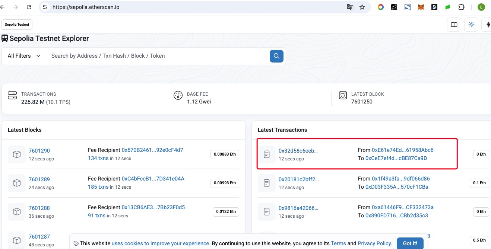
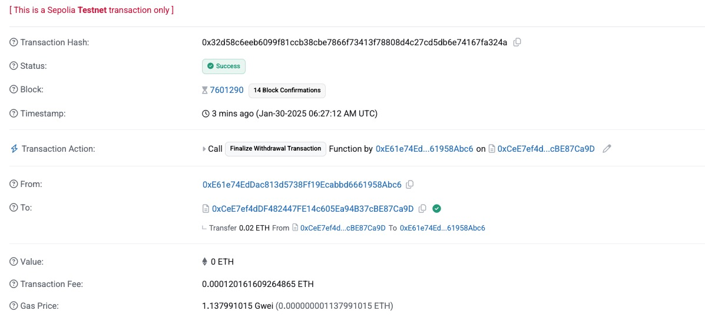

链上数据分析实战
2025-02-01
Chapter 1 链上数据分析简介
1.1 什么是链上数据分析
数据分析,想必大家都非常的了解, 数据分析的核心聚焦于 “用数据驱动决策” ，关键在于 明确业务目标、保障数据质量、挖掘关键规律、输出可落地的结论 ：从理解业务需求出发（如提升转化率），通过清洗整合数据（处理缺失、异常值），运用统计分析（假设检验）与机器学习（如分类模型）识别核心变量（如用户行为特征），最终以可视化报告（如用户流失路径图）转化为可执行的策略（如优化触达时机），核心工具（SQL/Python）与思维（业务导向、数据敏感性）支撑全流程，避免陷入技术细节而偏离实际价值。
这里有几个关键词:
- 明确业务目标, 我们需要明确, 业务的问题是什么? 有没有可以量化出来的目标?
- 数据的准备: 这里就涉及到, 抽取, 转换数据, 整理数据等等. 有了高质量的数据, 才能够对业务问题进行分析.
- 统计分析 : 在这里, 可能需要使用到各种统计方法, 例如计算统计量, 统计可视化, 统计模型等等来根据数据来分析业务的问题.
- 分析结果 : 通过分析的结果, 回答业务问题
那么, 什么是链上数据分析呢? 链上数据分析是数据分析的一个子集.链上数据分析是数据分析在区块链领域的垂直应用，专注于解析公开透明的区块链交易数据（如比特币、以太坊等），属于数据分析的子集但具备独特属性：其核心是通过追踪钱包地址、交易流向、智能合约交互等链上公开记录，结合网络图谱分析（如识别资金聚合地址）、行为模式挖掘（如巨鲸持仓变动）及合规风控（如反洗钱追踪），揭示加密货币市场趋势、项目生态活跃度或异常行为（如黑客攻击资金路径），工具上需适配区块链特性（如使用Dune Analytics查询链上数据、Etherscan解析交易），目标常服务于投资决策、安全监控或监管合规，本质仍遵循“数据驱动洞察”逻辑，但数据源与方法论因链上环境的去中心化、匿名性与不可篡改性而显著差异化。
我们都知道, 区块链(公链)是公开的,不可拆篡改的记账本, 一切的转账, 交易记录都是透明可信的. 随着以太坊的发起, 智能合约的发展, 区块链实际上正在成为一个大型的数据库. 智能合约替代了后端. Web2 和 Web3 的区别如下图:
 随着越来越多的链上项目的出现, 我们在链上的交互越来越频繁, 并且这一切的交互都被记录在区块链的数据当中, 这些数据都是链上数据.
随着越来越多的链上项目的出现, 我们在链上的交互越来越频繁, 并且这一切的交互都被记录在区块链的数据当中, 这些数据都是链上数据.
链上数据可以分为如下几类:
- 基础交易数据 (核心原始记录):
- 交易明细 : 发送接收方地址,金额,时间戳等
- 区块信心 : 区块高度, 打包时间, 矿工/验证者地址,区块奖励, 交易数量
- 地址属性 : 地址余额, 交易频次, 活跃时间
追踪资金流向、计算链上活跃度（如每日交易笔数）、识别矿工行为。
- 智能合约数据(生态行为载体):
- 和额曰调用日志 : 函数执行记录(ERC20 代币转账), 事件触发(NFT铸造)
- 合约状态变更 : 代币供应量, 质押总量, DAO治理投票结果等链上状态更新
- 合约元数据 : 合约代码哈希, 创建者地址, 升级历史
分析DeFi协议流动性变化、监控GameFi用户交互行为、审计合约安全性。
- 网络状态数据(区块链运行指标):
- Gas 动态 : 平均Gas 价格, Gas 消耗分布,
- 节点/验证者数据 : 质押量分布, 出块成功率, 网络分叉
- 链上费用与通胀 : 区块奖励分配 , 代币销毁量
评估网络拥堵程度、预测交易成本、分析通缩模型有效性。
- 衍生行为数据(高阶分析纬度):
- 地址聚类 : 通过交互模式识别同一实体控制的多地址（如交易所冷热钱包集群）。
- 资金网络图谱 : 绘制资金跨地址、跨链桥的流动路径（如洗币行为追踪）。
- 链上标签 : 标记地址属性（如“巨鲸”、“MEV机器人”、“钓鱼地址”）。
反洗钱（AML）、识别市场操纵、构建用户画像。
- 协议和应用层数据(垂直领域拓展)
- DeFi协议数据：借贷平台的抵押率、DEX交易对流动性深度、稳定币锚定偏差。
- NFT生态数据：藏品地板价、稀有度分布、版税分配记录。
- 跨链交互数据：跨链桥资产转移量、目标链分布、桥接安全性事件。
评估协议风险、发现套利机会、监控多链生态健康度。
虽然, 区块链的数据都是透明的, 但是我们很难直接读取哪些数据, 因为他们是非结构化的, 例如,我们在区块链浏览器上面查看一笔交易数据. 打开浏览器 : https://sepolia.etherscan.io/ , 选择一笔交易
 点击交易, 就可以查看交易的数据:  这样的数据, 数据分析的同学就会一脸的苦涩, 不知道如何处理. 事实上, 这样的数据是无法进行分析的, 我们需要通过索引 (indexing)，处理 (processing)，存储 (storage) 等等一系列数据摄取 (ingestion) 的处理过程，再根据所提问题来聚合运算对应的数据，才能得到问题的答案。

为了分析, 我们需要搭建节点来连接区块链数据, 再处理数据, 最后形成可以用来分析的数据. 这是一个大的工程. 因此,从整个数据分析链路来讲, 目前区块链数据产品可以分为 :
- 数据源
- 数据开发工具
- 数据app

- 数据应用 : Nansen，Messari，DeBank
- 数据平台 : Dune，FLipside，Footprint
- 数据节点 : Infura，Quick Node
有许多数据平台，如Dune，Flipside，Footprint，他们将索引得到的原始链上数据，经过一系列处理后，存入由平台负责更新和管理的数据仓库，也就是说整个区块链数据被他们做成了好多张关系型数据表格，我们要做的就是从表格里选一些我们想要的数据构建我们的分析数据。更进一步地，有Nansen，Messari，DeBank这些数据类产品，不光整理好数据，还按照需求分门别类地封装起来，方便用户直接使用。
1.2 为什么要进行链上数据分析
随着链上生态的蓬勃发展，各种交互行为催生了海量链上数据。这些数据不仅承载着价值的流动，还映射出市场的情绪和交易者的心理预期。精准地分析这些透明且不可篡改的数据，可以帮助我们洞察市场趋势、识别风险，并据此制定更明智的决策。在这个充满竞争与机遇的“黑暗森林”中，链上数据分析如同一盏明灯，指引方向，助我们在波诡云谲的市场中稳健前行。
以 DeFi 协议中的流动性挖矿为例：你添加流动性，赚取奖励，池子的深度增加，交易滑点降低，整个生态一片欣欣向荣，你也安心地将资金锁定在智能合约中。然而，突如其来的黑天鹅事件打破了这份平静。聪明资金（Smart Money）凭借敏锐的信息捕捉能力，第一时间撤离，而你作为普通投资者，可能还未察觉风险。当负面新闻传来，你才急忙尝试赎回资金，却发现奖励已经几乎归零，剧烈的无常损失让你难以保本，甚至怀疑自己是否掉入了区块链的陷阱。事实上，风险并非不可规避，关键在于如何利用链上数据，提前感知市场动向，做出理性决策，而非被动接受市场的狂风骤雨。

但如果你拥有链上数据分析的视角，你或许会提前察觉端倪：协议的 TVL（总锁定价值）突然大幅下降，奖励代币在 Uniswap 上的抛压激增。这意味着，某些资金敏锐的人已经察觉到不对劲，或收到风声迅速撤离。流动性正在枯竭，市场对该代币的信心崩塌，疯狂抛售正在上演。面对这样的信号，你是否该果断离场？
当然，这只是一个简单的抽象案例，但它揭示了一个关键事实：在 Crypto 这片充满不确定性的“黑暗森林”中，普通投资者始终面临信息不对称的劣势。然而，链上数据却是透明且真实的——它不会欺骗，也不会隐藏。这也是为什么许多投资者执着于追踪 Nansen 上的 Smart Money（聪明资金）。内幕消息不会主动告诉你风险即将来临，但它们会通过链上的交易活动悄然映射出来，并被永久记录。我们的任务，就是敏锐地捕捉这些数据细节，利用链上可见的线索，在一定程度上弥补信息差，做出更具前瞻性的决策，从而在市场风暴来袭前，提前找到避风港。
Axie 爆火，我们研究其日增用户数；NFT 迎来狂潮，我们追踪 mint 交易；以太坊 Gas 费飙升，我们分析是哪个项目引发了链上热潮。你发现了吗？我们对链上数据的敏感度并非凭空而来，而是伴随着链上活动的繁荣逐步提升。换句话说，链上数据的重要性，正是区块链技术成熟和应用蓬勃发展的必然结果。
越来越多的链上项目为我们提供了丰富的交互场景，海量数据不断累积，构建出一张立体的链上图景。而随着 SBT（灵魂绑定代币）、OAT（链上成就代币）的发展和广泛应用，“万物上链” 的愿景正逐步成为现实。未来，链上的数据将足够丰富，能够描绘出每个用户完整的链上肖像（On-Chain Identity），不仅包含交易行为，还涵盖社交关系、信誉积累、成就记录等多维度信息。这不仅为 DID（去中心化身份）和 SocialFi 赋予更强的价值支撑，也让去中心化世界中的社交与金融叙事变得更加清晰、可信和可追踪。
1.3 谁需要做链上数据分析
对于一般用户而言, 用成熟的数据产品即可. 但是成熟的数据产品门槛低, 使用方便, 但是不够定制化.
假设你在浏览 Ultrasound.money 时，突然发现以太坊的 Gas 消耗出现异常飙升。你顺藤摸瓜，发现这个不知名的 XEN 项目竟然是主要推手。你的直觉告诉你，这可能是一个早期机会！
你开始进一步研究，在 Twitter 上搜索相关信息，了解到 XEN 采用了一种名为 PoP（Proof of Participation）的挖矿机制。它的规则很简单——参与者支付 Gas 费用即可挖矿，XEN 代币归参与者所有，且随着参与人数的增加，挖矿难度加大，代币供应逐步减少。这听起来很有意思，但你并不满足于仅仅观察 Gas 消耗，你想深入了解：参与人数有多少？增长趋势如何？人们一般选择锁仓多久？最关键的是，你发现 XEN 似乎没有严格的反女巫（Sybil Attack）机制，任何人只要支付 Gas 就能参与。那么，冲进来的“科学家”（套利玩家）多吗？市场是否已经被撸秃了？你是否还有获利空间？
面对这些疑问，数据是唯一能够支撑你做决策的依据。但正因为 XEN 还处于早期，主流数据分析平台（如 Nansen、Glassnode）并没有专门追踪它的数据，而现成的数据产品往往也难以满足高度定制化的分析需求。这时，你意识到，如果想在链上世界中抢占先机，必须掌握自主分析链上数据的能力。
于是，你动手编写 Dune Query，深入分析 XEN 参与情况：XEN Crypto Overview。通过数据，你发现大部分用户选择短期质押，且 近 70% 的参与者是新创建的钱包，这意味着 XEN 很可能已经被大规模“撸毛”了。这直接指向一个关键结论——短期市场的抛售压力将会极大。如果你决定参与，你的最佳策略是选择 最短的质押时间，尽快卖出，比其他人更快落袋为安。
至此，你完整地经历了一次链上数据分析的流程：发现项目，研究项目机制，抽象出关键评估标准，最后通过数据分析辅助决策。在 DeFi 乃至整个 Web3 领域，这种方法论至关重要——当所有人都依赖现成工具时，真正的机会往往属于那些能主动获取、解析和利用链上数据的人。
1.4 如何进行链上数据分析
数据分析提供一个可量化的视角最终去支撑决策，分析只是过程而不是目的。简单的步骤是厘清三个问题，构建数据思维：
- 分析的目的/目标是什么
加密货币目前是不是一个好的买入时机 ?
- 策略是什么
买币的策略就是紧跟Smart money , 买啥跟啥, 他买入我买入, 他卖出我卖出. 如果协议运作良好, 存款利率良好, 就暂时存进去吃利息,.
- 需要哪些数据
需要监控Smart money 地址的持仓动向, 甚至考量代币的交易量和持仓分布; 查一下协议的TVL, 未偿债务额, 资金利用率, APR等. 每日新增用户数, 增常趋势, 每日活跃用户数量, 交易笔数 ,玩家入金情况, NFT市场里面道具销售情况.等等

数据分析的难度不在于技术上, 编程什么哪里都可以学. 难的是对分析问题的理解, 这三个问题都需要大量的学习和理解, 这也是区分分析师水平的门槛.
好的分析师需要具有如下特点 :
- 对于赛道和协议有理解和认识
分析的是什么赛道, 项目的机制是什么? 有哪些数据, 数据是什么含义?
- 抽象事物的能力
将一个模糊的概念变成可量化的指标:
这个协议好不好 : 流动性 + 交易量 + 活跃用户数 + 资本利用率 + 协议产生的收益
这是很难的, 如何用量化的指标来刻画一个模糊概念.
- 处理数据的能力
这里包含, 取数据(链上数据从哪来), 处理数据(筛选, 剔除无关的数据), 数据分析能力

总而言之, 数据分析只是支撑研究的工具, 不应该为了分析而分析, 这个过程中, 首先你需要对某个项目, 概念,赛道进行研究,学习, 了解其运行机制, 抽象出对定性概念的定量分析, 最后才是找数据,做分析.